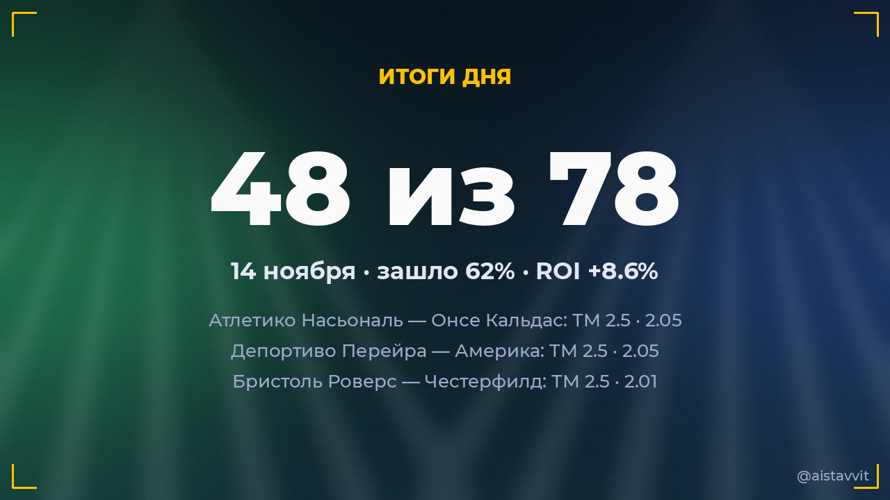

Итоги дня — 14 ноября 2026
Зашло 48 из 78 основных прогнозов (62%), ROI дня +8.6%. Каждый прогноз учтён — и заходы, и промахи.

Все прогнозы дня
🏀 Мемфис Гриззлис — Бруклин Нетс
П1 (с ОТ) · 1.56129:110 ✅
П1 (с ОТ) · 1.56129:110 ✅
⚽ Суиндон Таун — Гримсби Таун
ТБ 2.5 · 1.571:4 ✅
ТБ 2.5 · 1.571:4 ✅
⚽ Шапекоэнсе — Васко да Гама
П2 и ТБ 1.5 · 1.600:2 ✅
П2 и ТБ 1.5 · 1.600:2 ✅
🎾 Бьянка Андрееску — Элизабет Мандлик
Будет 2 сета · 1.712:0 ✅
Будет 2 сета · 1.712:0 ✅
⚽ Cборная Грузии — Сборная Венгрии
ТМ 2.5 · 1.590:2 ✅
ТМ 2.5 · 1.590:2 ✅
⚽ Керетаро — Монтеррей
П2 · 1.950:1 ✅
П2 · 1.950:1 ✅
⚽ Флитвуд Таун — Транмир Роверс
П1 · 1.951:0 ✅
П1 · 1.951:0 ✅
⚽ Almería — Андорра
П1 · 1.592:1 ✅
П1 · 1.592:1 ✅
⚽ Атлетико Гоияниенсе — Куяба
ТМ 2.5 · 1.951:0 ✅
ТМ 2.5 · 1.951:0 ✅
🏒 Вегас — Нэшвилл
ТМ 6.5 · 1.742:3 ✅
ТМ 6.5 · 1.742:3 ✅
⚽ Крисиума — Novorizontino
ТМ 2.5 · 1.670:1 ✅
ТМ 2.5 · 1.670:1 ✅
⚽ Форталеза Сипакира — Вила-Нова
ТМ 2.5 · 1.951:0 ✅
ТМ 2.5 · 1.951:0 ✅
⚽ Жувентуде — Ботафого
ТМ 2.5 · 1.832:0 ✅
ТМ 2.5 · 1.832:0 ✅
⚽ Сборная Австрии — Сборная Ирландии
П1 · 1.571:0 ✅
П1 · 1.571:0 ✅
🏒 Чикаго — Виннипег
П2 (с ОТ и буллитами) · 1.624:5 ✅
П2 (с ОТ и буллитами) · 1.624:5 ✅
🎾 Джессика Пегула — Мирра Андреева
Будет 2 сета · 1.860:2 ✅
Будет 2 сета · 1.860:2 ✅
🎾 Линда Носкова — Элина Свитолина
Будет 2 сета · 1.850:2 ✅
Будет 2 сета · 1.850:2 ✅
⚽ Атлетико Букараманга — Форталеза Сипакира
П1 · 1.541:0 ✅
П1 · 1.541:0 ✅
⚽ Сборная Румынии — Сборная Польши
ТБ 2.5 · 1.652:1 ✅
ТБ 2.5 · 1.652:1 ✅
⚽ Сборная Sweden — Сборная Bosnia-Herzegovina
ТБ 2.5 · 1.613:2 ✅
ТБ 2.5 · 1.613:2 ✅
⚽ Атлетико Насьональ — Онсе Кальдас
ТМ 2.5 · 2.051:1 ✅
ТМ 2.5 · 2.051:1 ✅
⚽ Депортиво Перейра — Америка
ТМ 2.5 · 2.050:2 ✅
ТМ 2.5 · 2.050:2 ✅
⚽ Итагуи — Индепендьенте Медельин
ТМ 2.5 · 1.800:1 ✅
ТМ 2.5 · 1.800:1 ✅
⚽ Палестинская национальная сборная — Сборная Ирана
ТМ 2.5 · 1.770:2 ✅
ТМ 2.5 · 1.770:2 ✅
⚽ Колчестер Юнайтед — Джиллингем
ТМ 2.5 · 1.812:0 ✅
ТМ 2.5 · 1.812:0 ✅
⚽ Партик Тисл — Инвернесс Каледониан Тисл
П1 · 1.823:2 ✅
П1 · 1.823:2 ✅
⚽ Стенхаусмюир — Куинз Парк
П1 · 1.792:0 ✅
П1 · 1.792:0 ✅
🏀 Миннесота Тимбервулвз — Чикаго Буллз
ТМ 236.5 · 1.93106:117 ✅
ТМ 236.5 · 1.93106:117 ✅
⚽ Сборная Бахрейна — Сборная Йемена
П1 · 1.613:1 ✅
П1 · 1.613:1 ✅
🏀 Кливленд — Даллас Маверикс
ТБ 227.5 · 1.91127:117 ✅
ТБ 227.5 · 1.91127:117 ✅
⚽ Сборная Тайваня — Сборная Кыргызстана
ТМ 3.5 · 1.800:3 ✅
ТМ 3.5 · 1.800:3 ✅
⚽ Сборная Китая — Сборная Малайзии
П1 · 1.562:0 ✅
П1 · 1.562:0 ✅
⚽ Эксетер Сити — Челтнем Таун
П1 · 1.891:0 ✅
П1 · 1.891:0 ✅
🏒 Питтсбург — Оттава
П2 (с ОТ и буллитами) · 1.741:4 ✅
П2 (с ОТ и буллитами) · 1.741:4 ✅
🏒 Вашингтон — Нью-Джерси
П2 (с ОТ и буллитами) · 1.744:7 ✅
П2 (с ОТ и буллитами) · 1.744:7 ✅
🏒 Бостон — Миннесота
П2 (с ОТ и буллитами) · 1.772:6 ✅
П2 (с ОТ и буллитами) · 1.772:6 ✅
🏒 Торонто — Эдмонтон
П2 (с ОТ и буллитами) · 1.650:1 ✅
П2 (с ОТ и буллитами) · 1.650:1 ✅
🏒 Сент-Луис — Флорида
П2 (с ОТ и буллитами) · 1.931:4 ✅
П2 (с ОТ и буллитами) · 1.931:4 ✅
⚽ Бристоль Роверс — Честерфилд
ТМ 2.5 · 2.010:2 ✅
ТМ 2.5 · 2.010:2 ✅
⚽ Cúcuta Deportivo — Хагуарес де Кордова
П1 · 1.542:0 ✅
П1 · 1.542:0 ✅
⚽ Уимблдон — Блэкпул
ТМ 2.5 · 1.981:0 ✅
ТМ 2.5 · 1.981:0 ✅
⚽ Милтон Кинс Донс — Бертон Альбион
П1 · 1.666:2 ✅
П1 · 1.666:2 ✅
⚽ Шеффилд Уэнсдей — Плимут Аргайл
ТБ 2.5 · 1.553:0 ✅
ТБ 2.5 · 1.553:0 ✅
⚽ Уиган — Барнсли
ТБ 2.5 · 1.552:1 ✅
ТБ 2.5 · 1.552:1 ✅
⚽ Порт Вейл — Аккрингтон Стэнли
П1 · 1.964:2 ✅
П1 · 1.964:2 ✅
🏒 Коламбус — Филадельфия
ТБ 5.5 · 1.853:4 ✅
ТБ 5.5 · 1.853:4 ✅
🏒 Тампа-Бэй — Детройт
ТМ 6.5 · 1.740:2 ✅
ТМ 6.5 · 1.740:2 ✅
⚽ Стокпорт Каунти — Рединг
П1 · 1.853:1 ✅
П1 · 1.853:1 ✅
⚽ Мирасол — Атлетико Минейро
П1 · 1.940:0 ❌
П1 · 1.940:0 ❌
⚽ Банфилд — Бока Хуниорс
ТМ 2.5 · 1.710:3 ❌
ТМ 2.5 · 1.710:3 ❌
⚽ Насьонал — Альбион
ТБ 2.5 · 1.691:1 ❌
ТБ 2.5 · 1.691:1 ❌
🏒 Монреаль — Колорадо
ТБ 6.5 · 1.981:4 ❌
ТБ 6.5 · 1.981:4 ❌
⚽ Deportivo Cali — Deportes Tolima
ТМ 2.5 · 1.622:2 ❌
ТМ 2.5 · 1.622:2 ❌
⚽ Мильонариос — Альянса
ТБ 2.5 · 1.672:0 ❌
ТБ 2.5 · 1.672:0 ❌
🏀 Нью-Орлеан Пеликанс — Денвер Наггетс
ТБ 235.5 · 1.93108:116 ❌
ТБ 235.5 · 1.93108:116 ❌
🏀 Сакраменто Кингз — Портленд
ТБ 229.5 · 1.89107:120 ❌
ТБ 229.5 · 1.89107:120 ❌
⚽ Овьедо — Жирона
ТМ 2.5 · 1.761:2 ❌
ТМ 2.5 · 1.761:2 ❌
⚽ Сборная Португалии — Сборная Дании
П1 · 1.561:4 ❌
П1 · 1.561:4 ❌
🏀 Клипперс — Оклахома-Сити Тандер
ТМ 222.5 · 1.87113:112 ❌
ТМ 222.5 · 1.87113:112 ❌
⚽ Сборная Японии — Сборная Бразилии
П2 · 1.953:2 ❌
П2 · 1.953:2 ❌
🎾 Тейлор Фриц — Тьяго Агустин Тиранте
Будет 2 сета · 1.622:1 ❌
Будет 2 сета · 1.622:1 ❌
⚽ Реал Вальядолид — Castellón
ТБ 2.5 · 1.670:1 ❌
ТБ 2.5 · 1.670:1 ❌
⚽ Сборная Косова — Сборная Израиля
П1 · 1.830:0 ❌
П1 · 1.830:0 ❌
⚽ Эйр Юнайтед — Рэйт Роверс
ТМ 2.5 · 1.613:1 ❌
ТМ 2.5 · 1.613:1 ❌
⚽ Солфорд Сити — Нортгемптон Таун
П1 · 1.591:1 ❌
П1 · 1.591:1 ❌
⚽ Ливингстон — Гринок Мортон
ТБ 2.5 · 1.502:0 ❌
ТБ 2.5 · 1.502:0 ❌
⚽ Рочдейл — Йорк Сити
ТБ 2.5 · 1.580:1 ❌
ТБ 2.5 · 1.580:1 ❌
⚽ Шрусбери Таун — Олдем Атлетик
ТМ 2.5 · 1.822:1 ❌
ТМ 2.5 · 1.822:1 ❌
⚽ Кру Александра — Ньюпорт Каунти
ТМ 2.5 · 1.812:2 ❌
ТМ 2.5 · 1.812:2 ❌
⚽ Real Sociedad II — Спортинг
ТМ 2.5 · 1.772:2 ❌
ТМ 2.5 · 1.772:2 ❌
⚽ Сборная Норвегии — Сборная Уэльса
ТМ 3.5 · 1.833:1 ❌
ТМ 3.5 · 1.833:1 ❌
⚽ Мальорка — Кордова
П1 · 1.883:3 ❌
П1 · 1.883:3 ❌
🏒 Каролина — Сиэтл
ТБ 6.5 · 2.025:1 ❌
ТБ 6.5 · 2.025:1 ❌
⚽ Депортиво Мальдонадо — Серро Портеньо
П1 · 1.590:1 ❌
П1 · 1.590:1 ❌
⚽ Сборная Northern Ireland — Сборная Украины
ТБ 1.5 · 1.561:0 ❌
ТБ 1.5 · 1.561:0 ❌
⚽ КРБ — Сеара
ТБ 2.5 · 1.651:1 ❌
ТБ 2.5 · 1.651:1 ❌
⚽ Спорт Ресифи — Гояс
ТМ 2.5 · 2.053:0 ❌
ТМ 2.5 · 2.053:0 ❌
⚽ Америка Минейро — Аваи
ТБ 2.5 · 1.620:2 ❌
ТБ 2.5 · 1.620:2 ❌
← предыдущий день · статистика бота · прогнозы на сегодня · Telegram-канал